Protection respiratoire (APR)
L'appareil de protection respiratoire (APR) est le dernier recours dans la hiérarchie des moyens de contrôle. Son choix repose sur le coefficient de risque (CR = CC/VEA), le facteur de protection caractéristique (FPC) et un essai d'ajustement obligatoire. La norme CSA Z94.4-11 définit le programme de protection respiratoire (PPR). En mine, les APR sont incontournables dans les zones empoussiérées de silice, en présence de DPM, lors des travaux sur Amiante et en interventions DIVS.
Table des matières
- Programme de protection respiratoire
- Coefficient de risque et FPC
- Types d'APR
- Médiums filtrants
- Essai d'ajustement
- Utilisation et entretien
- Sélection APR pour bioaérosols
- Application terrain
Programme de protection respiratoire
La norme CSA Z94.4-11 encadre le choix, l'entretien et l'utilisation des APR.
Toucher l'image pour l'agrandir{kind=link}
Contenu obligatoire du PPR (chapitres 4-14)
- Rôles et responsabilités.
- Évaluation des dangers.
- Choix des APR.
- Formation.
- Essai d'ajustement.
- Utilisation.
- Nettoyage, inspection, entretien, entreposage.
- Surveillance de la santé.
- Évaluation du programme.
- Tenue de registre.
Responsabilités : administrateur, utilisateur, surveillant, responsable de la sélection, personne d'essai d'ajustement, professionnel de la santé.
Coefficient de risque et FPC
Coefficient de risque (CR)
$$CR = \frac{CC}{VEA} \text{ ou } CR = \frac{CC}{VR}$$
où CC = concentration du contaminant, VEA = valeur d'exposition admissible (ou valeur de référence).
Pour mélange : $CR = R_m$ (ratio de mélange, voir Calculs d'exposition et ajustements TPN).
Facteur de protection caractéristique (FPC)
Le FPC quantifie la réduction d'exposition attendue selon le type d'APR.
{kind=link}
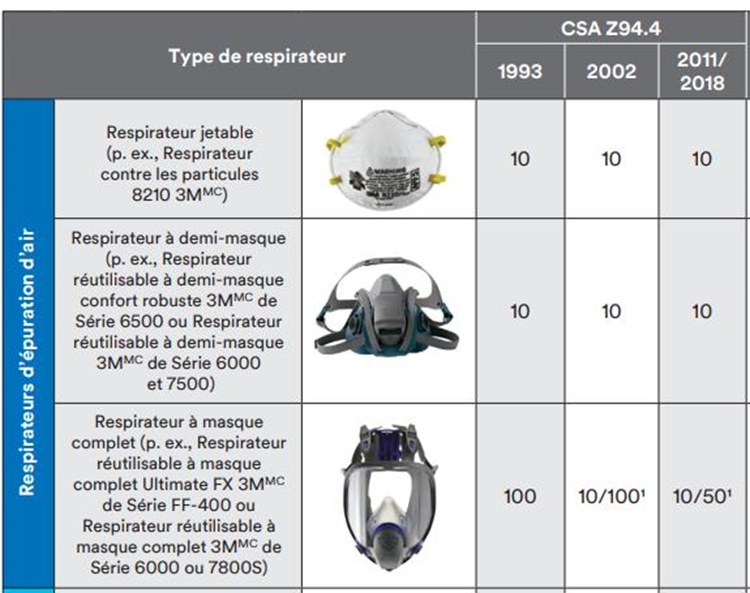
Toucher l'image pour l'agrandir| Type d'APR | FPC (épuration d'air non motorisé) | FPC (motorisé / adduction) |
|---|---|---|
| Demi-masque (EAQL ou EAQN) | 10 | - |
| Pièce faciale complète (EAQL) | 10 | - |
| Pièce faciale complète (EAQN) | 50 | - |
| Casque/cagoule (EAQL) | - | 25 |
| Casque/cagoule (étude fabricant) | - | 1 000 |
| Masque complet motorisé | - | 1 000 |
| Pièce faciale hermétique à adduction | - | 1 000 |
| APR autonome (SCBA) | - | 10 000 |
Sélection
Le FPC de l'APR doit être >= CR. Si CR = 16 (plomb à 0,8 mg/m³ vs VEMP 0,05), retenir un casque, une cagoule ventilée ou un masque complet.
Facteur d'ajustement minimal = FPC x 10 (sécurité), critère pour l'essai quantitatif.
L'arbre de sélection synthétise la démarche.
{kind=link}
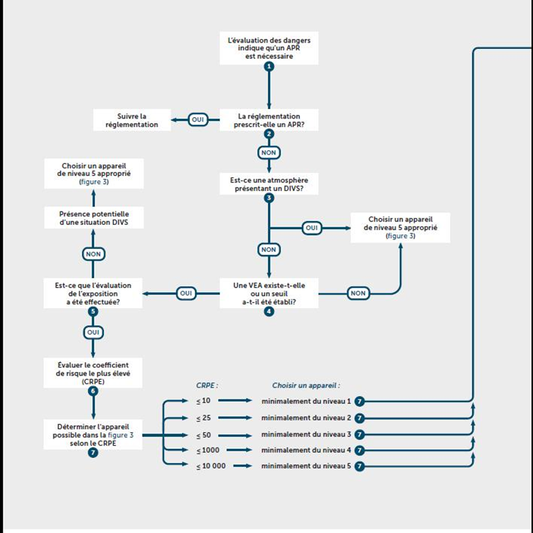
Toucher l'image pour l'agrandirTypes d'APR
APR à épuration d'air
Filtrent l'air ambiant.
| Sous-type | Description |
|---|---|
| Demi-masque | Couvre nez, bouche, menton. Réutilisable ou jetable (N95) |
| Pièce faciale complète | Couvre nez, bouche, yeux. Protège des irritants oculaires |
| Motorisé (PAPR) | Ventilateur force l'air à travers les filtres ; cagoule, casque, masque complet |
Demi-masque, FPC = 10.
{kind=link}
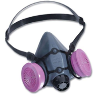
Toucher l'image pour l'agrandirPièce faciale complète, FPC = 10 (EAQL) ou 50 (EAQN).
{kind=link}
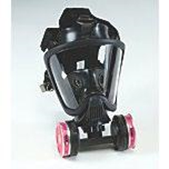
Toucher l'image pour l'agrandirCagoule motorisée, FPC = 1 000.
{kind=link}
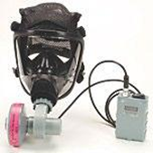
Toucher l'image pour l'agrandirAPR à adduction d'air
Air d'une source externe (compresseur, bouteilles, air ambiant).
{kind=link}
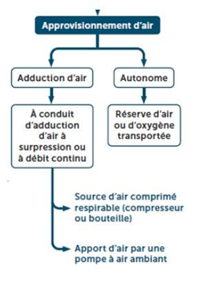
Toucher l'image pour l'agrandir- Cagoule non hermétique.
- Pièce faciale hermétique.
- Casque.
L'air comprimé respirable doit respecter la norme CSA Z180.1-00 ; la valise d'échantillonnage permet d'en vérifier la qualité.
{kind=link}
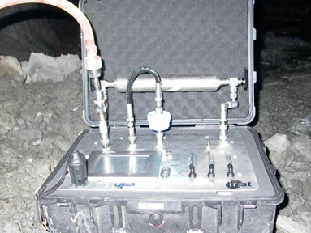
Toucher l'image pour l'agrandirAPR autonome (SCBA)
Bouteille d'air portée par l'utilisateur. FPC = 10 000. Usage en atmosphère DIVS (danger immédiat pour la vie et la santé) : incendie, espace clos non évalué, sauvetage minier.
{kind=link}
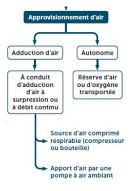
Toucher l'image pour l'agrandirMédiums filtrants
Particules (filtres mécaniques)
Classification NIOSH selon la résistance à l'huile.
{kind=link}
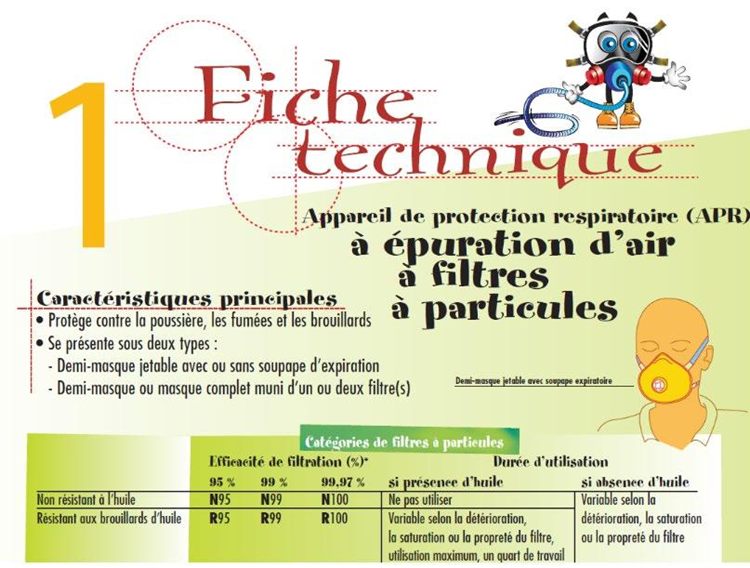
Toucher l'image pour l'agrandir| Lettre | Résistance à l'huile |
|---|---|
| N | Non résistant à l'huile |
| R | Résistant aux brouillards d'huile (limité) |
| P | Protection contre l'huile |
Efficacités : N95, R95, P95 (95 %), N99, R99, P99 (99 %), N100, R100, P100 (99,97 %).
Mécanismes : interception, impaction, diffusion, charge électrostatique.
Gaz et vapeurs (cartouches chimiques)
Code couleur CSA Z94.4.
{kind=link}
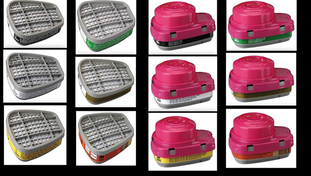
Toucher l'image pour l'agrandir| Couleur | Usage |
|---|---|
| Noir | Vapeurs organiques |
| Blanc | Gaz acides (HCl, SO2) |
| Vert | Ammoniac |
| Jaune | Vapeurs organiques + gaz acides |
| Bleu | Monoxyde de carbone |
| Magenta | HEPA / particules radioactives |
| Olive | Multigaz |
Durée de vie : déterminée par le temps de claquage du contaminant le plus volatil. Influencée par rythme de travail, T°, HR, contaminants multiples.
Outils : utilitaire SaTuRisk de l'IRSST, MSA Response Guide.
Essai d'ajustement
Obligatoire pour les pièces faciales hermétiques. À refaire
- Au moins tous les 2 ans.
- Avant la première utilisation.
- Si modification physique de l'utilisateur (poids, chirurgie).
- Si changement de modèle ou taille.
- Si modification d'autres EPI affectant l'étanchéité.
Essai qualitatif (EAQL)
Détection sensorielle
- Acétate d'isoamyle (banane).
- Saccharine (sucré).
- Bitrex (benzoate de dénatonium, amer).
- Fumée irritante (non recommandée par NIOSH).
Procédure : essai de détection, puis avec APR ; 7 exercices d'1 min (respiration normale, profonde, tourner tête, hocher, parler, flexion, normale).
Essai quantitatif (EAQN)
Mesure de l'infiltration via un instrument (ex. Portacount). Pour FPC >= 50, l'EAQN est requis.
{kind=link}
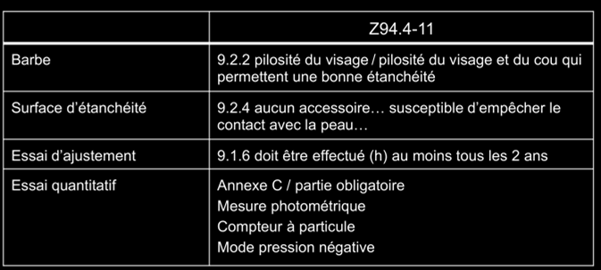
Toucher l'image pour l'agrandirTest d'étanchéité (à chaque mise en place)
Vérification positive et négative manuelle à chaque utilisation.
Utilisation et entretien
Bonnes pratiques
- Étanchéité : éviter barbe, lunettes mal ajustées, cicatrices, acné sévère.
- Porter pendant toute la période d'exposition (l'efficacité chute rapidement si retiré, surtout pour FPC élevé).
- Test d'étanchéité positif/négatif à chaque mise en place.
Nettoyage
- Après chaque usage si partagé.
- Selon les instructions du fabricant.
- Pièces faciales hermétiques nettoyées régulièrement.
Inspection
Avant et après chaque utilisation
- Pièces faciales (fissures, déformation).
- Courroies, soupapes.
- Filtres ou cartouches.
- Tuyaux, bouteille d'air.
Entreposage
- À l'abri de la poussière, ozone, soleil, chaleur, froid, vermine, huile, graisse.
- Sac hermétique (ex. Ziploc) pour les masques sans cartouche.
Sélection APR pour Bioaérosols
Approche par gestion graduée des risques (art. 7.3.2.3 CSA Z94.4-11)
- Groupe de risque.
- Vitesse de génération.
- Degré de contrôle.
Voir Bioaérosols.
Application terrain
Combinaisons APR-contaminant typiques en mine
| Situation | APR recommandé |
|---|---|
| Forage souterrain (silice résiduelle après mesures techniques) | Demi-masque P100 ou PAPR cagoule |
| DPM (engins diesel) | P100, motorisé selon CR |
| Travaux sur Amiante (hub) (risque modéré) | Demi-masque P100 minimum, masque complet ou PAPR selon CR |
| Travaux sur amiante (risque élevé) | PAPR ou SCBA |
| Sauvetage minier (incendie, fumées) | SCBA (FPC 10 000) |
| Espace clos non garanti | SCBA ou ligne d'air avec bouteille d'évacuation |
| Réactifs chimiques d'usine (cyanure, acides) | Cartouches multigaz + filtre P100 selon FDS |
| Soudage atelier (Cr VI, Mn) | PAPR cagoule (efficace pour Cr VI) |
Particularités minières
- Brigades de sauvetage minier : SCBA réglementaire (CSA Z94.4 + standards CANMET).
- Barbe au travail : politique stricte de site, sinon recours systématique à PAPR cagoule (pas de pièce faciale hermétique sur barbe).
- Programme PPR doit intégrer sous-traitants et visiteurs.
Ressources
| Document | Type | Source |
|---|---|---|
| CSA Z94.4-11 (programme APR) | Norme | CSA |
| CSA Z180.1 (air comprimé respirable) | Norme | CSA |
| Utilitaire SaTuRisk | Outil | IRSST |
| Guide ANSI/AIHA Z88.2 | Référence | AIHA |
| Registre essai d'ajustement | Gabarit | À développer en interne |
Articles wiki connexes
Pages qui pointent ici (54)
- 🎯 Démarrage rapide, conseiller SST Hygiène industrielle
- 🎯 Démarrage rapide, conseiller SST Toxicologie
- 🎯 Démarrage rapide, direction et RH Hygiène industrielle
- 🎯 Démarrage rapide, direction et RH Toxicologie
- 🎯 Démarrage rapide, superviseur Hygiène industrielle
- 🎯 Démarrage rapide, superviseur Toxicologie
- 🏠 Wiki Hygiène industrielle, mines Hygiène industrielle
- 📖 Glossaire commun Hygiène industrielle
- 📖 Glossaire commun Sécurité industrielle
- 📖 Glossaire commun Toxicologie
- Aérosols Hygiène industrielle
- Agresseurs chimiques Hygiène industrielle
- Agresseurs physiques Hygiène industrielle
- Amiante Hygiène industrielle
- Amiante Toxicologie
- Analyse de risques Sécurité industrielle
- art-51-11-LSST Ergonomie
- art-51-11-LSST Hygiène industrielle
- art-51-LSST Hygiène industrielle
- Asphyxiants simples et chimiques Hygiène industrielle
- Asphyxiants simples et chimiques Toxicologie
- Bioaérosols Hygiène industrielle
- Bruit en milieu de travail Hygiène industrielle
- Choisir un programme de protection auditive en mine Hygiène industrielle
- Contrainte thermique Hygiène industrielle
- Démarche AREC Hygiène industrielle
- Démarche en hygiène industrielle Hygiène industrielle
- Entrer dans un espace clos en sécurité Hygiène industrielle
- Entrer dans un espace clos en sécurité Sécurité industrielle
- Équipements de protection Hygiène industrielle
- Équipements de protection Sécurité industrielle
- Espaces clos Sécurité industrielle
- Évaluation et priorisation chimique Toxicologie
- Familles de contaminants Toxicologie
- Gaz et vapeurs Hygiène industrielle
- Gestion des moteurs diesel sous terre Toxicologie
- Gestion des risques en entreprise Sécurité industrielle
- Hiérarchie de la prévention Sécurité industrielle
- Hiérarchie des moyens de prévention Hygiène industrielle
- Hiérarchie des moyens de prévention Sécurité industrielle
- Introduction à la toxicologie industrielle Toxicologie
- Lire une FDS rapidement Hygiène industrielle
- Mettre en place un programme d'hygiène industrielle Hygiène industrielle
- Pesticides Toxicologie
- Prévention et programmes Hygiène industrielle
- Programme de prévention silice cristalline Hygiène industrielle
- Programme de prévention silice cristalline Toxicologie
- Reconnaître les poussières dangereuses en mine Hygiène industrielle
- Reconnaître une exposition Hygiène industrielle
- Reconnaître une exposition Toxicologie
- Risques sectoriels et bonnes pratiques Sécurité industrielle
- Toxicité du système respiratoire Toxicologie
- Travailler avec des solvants en mine Toxicologie
- Travailler près des moteurs diesel en mine Toxicologie